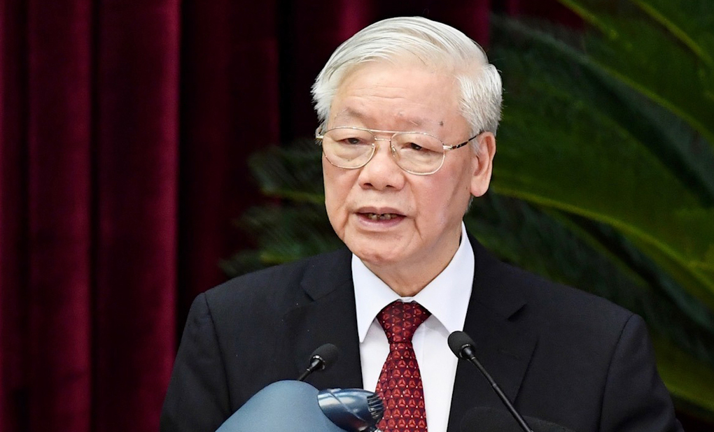
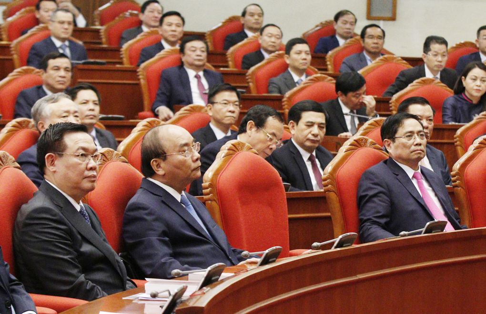

Ba chức danh lãnh đạo chủ chốt được giới thiệu với số phiếu tập trung cao
Hội nghị Trung ương bỏ phiếu giới thiệu nhân sự ứng cử các chức danh Chủ tịch nước, Thủ tướng, Chủ tịch Quốc hội với số phiếu tập trung cao.
Sau hơn một ngày làm việc, hội nghị Trung ương 2 (khóa XIII) bế mạc sáng 9/3. Về việc giới thiệu nhân sự lãnh đạo cấp cao của các cơ quan nhà nước, Tổng bí thư, Chủ tịch nước Nguyễn Phú Trọng cho biết, "Trung ương đã dân chủ thảo luận, xem xét kỹ lưỡng, lựa chọn phương án hợp lý nhất trong điều kiện có thể và đã đạt được sự nhất trí rất cao".
Ban chấp hành Trung ương khẳng định, cần sớm kiện toàn, sắp xếp lại các chức danh lãnh đạo cơ quan nhà nước; nhất trí cho thực hiện việc này tại kỳ họp thứ 11, Quốc hội khoá XIV (dự kiến khai mạc 24/3).
Tổng bí thư, Chủ tịch nước Nguyễn Phú Trọng phát biểu tại hội nghị Trung ương 2 (khóa XIII), sáng 9/3. Ảnh: VGP
Tại hội nghị, Trung ương đã bỏ phiếu giới thiệu nhân sự ứng cử các chức danh Chủ tịch nước, Thủ tướng, Chủ tịch Quốc hội - là những chức danh lãnh đạo chủ chốt của Nhà nước, với số phiếu tập trung cao.
Bộ Chính trị cũng đã báo cáo xin ý kiến Trung ương trước khi chính thức giới thiệu nhân sự đối với các chức danh khác, để Quốc hội xem xét, bầu hoặc phê chuẩn theo quy định.
Tổng bí thư, Chủ tịch nước Nguyễn Phú Trọng nói Bộ Chính trị sẽ chỉ đạo các cơ quan chức năng tiếp thu ý kiến của Trung ương, hoàn chỉnh phương án giới thiệu nhân sự ứng cử chức danh lãnh đạo các cơ quan nhà nước, để chuẩn bị trình Quốc hội. "Đây là một bước quan trọng trong việc bố trí, sắp xếp, kiện toàn đội ngũ cán bộ của hệ thống chính trị trong nhiệm kỳ này và cho chúng ta thêm kinh nghiệm để tiến hành các bước tiếp theo", ông nêu rõ.
Hàng đầu từ trái qua: Bí thư Thành ủy Hà Nội Vương Đình Huệ, Thủ tướng Nguyễn Xuân Phúc, Trưởng ban Tổ chức Trung ương Phạm Minh Chính, tại hội nghị Trung ương 2 (khóa XIII), sáng 9/3. Ảnh: VGP
Sau hội nghị Trung ương 2 (khóa XIII), cùng với việc lãnh đạo thực hiện tốt công tác nhân sự cấp cao tại kỳ họp thứ 11, Quốc hội khoá XIV, các cấp có thẩm quyền sẽ tiếp tục kiện toàn lãnh đạo các cơ quan của Trung ương Đảng, các ban cán sự đảng và đảng đoàn ở những nơi có sự thay đổi nhân sự, "bảo đảm sự thông suốt, liên tục trong các hoạt động của toàn hệ thống chính trị".
Đề cập tới chương trình làm việc toàn khóa của Ban chấp hành Trung ương khóa XIII, Tổng bí thư, Chủ tịch nước Nguyễn Phú Trọng nói Trung ương cơ bản tán thành với tờ trình và dự thảo chương trình làm việc; đồng thời, nhấn mạnh việc xác định nội dung chương trình cần bám sát nghị quyết và các văn kiện của Đại hội XIII.
Chương trình làm việc toàn khóa của Trung ương cần tập trung cụ thể hóa và chỉ đạo thực hiện 6 nhiệm vụ trọng tâm, những vấn đề thực tiễn bức thiết đặt ra, những khó khăn cần tháo gỡ, giải quyết, những khâu đột phá, các nhiệm vụ trọng yếu, như: Tiếp tục đẩy mạnh thực hiện nghị quyết Trung ương 4 khoá XI, khóa XII về xây dựng Đảng; đẩy mạnh đấu tranh phòng, chống tham nhũng, lãng phí; đổi mới mô hình tăng trưởng, cơ cấu lại nền kinh tế, nâng cao chất lượng tăng trưởng, năng suất lao động, sức cạnh tranh của nền kinh tế; chủ động và tích cực hội nhập quốc tế...
Để thực hiện tốt chương trình làm việc toàn khóa đã được Trung ương thông qua, ngay sau hội nghị này, Tổng bí thư, Chủ tịch nước Nguyễn Phú Trọng cho biết, Bộ Chính trị sẽ chỉ đạo khẩn trương nghiên cứu, xây dựng kế hoạch triển khai một cách nghiêm túc; phân công rõ ràng các tổ chức, cá nhân chịu trách nhiệm chuẩn bị các đề án cụ thể.
Hội nghị Trung ương 2 (khóa XIII) khai mạc sáng 8/3, xem xét và bàn về chương trình làm việc toàn khóa; việc giới thiệu nhân sự lãnh đạo cấp cao của các cơ quan Nhà nước và một số vấn đề quan trọng khác.
Trong 3 chức danh lãnh đạo chủ chốt của Nhà nước, Tổng bí thư Nguyễn Phú Trọng được bầu làm Chủ tịch nước tại kỳ họp thứ sáu, Quốc hội khóa XIV (tháng 10/2018).
Thủ tướng Nguyễn Xuân Phúc được bầu giữ cương vị người đứng đầu Chính phủ nhiệm kỳ 2011-2016 tại kỳ họp thứ 11, Quốc hội khóa XIII (ngày 7/4/2016); tiếp đó ông được bầu làm Thủ tướng nhiệm kỳ 2016-2021, tại kỳ họp thứ nhất, Quốc hội khóa XIV (tháng 7/2016).
Chủ tịch Quốc hội Nguyễn Thị Kim Ngân cũng được bầu làm Chủ tịch Quốc hội tại kỳ họp thứ 11, Quốc hội khóa XIII (ngày 31/3/2016). Bà trở thành nữ chính khách Việt Nam đầu tiên giữ cương vị này, đồng thời cũng là người đầu tiên thực hiện quy định tuyên thệ khi nhậm chức. Từ tháng 7/2016, bà là Chủ tịch Quốc hội khóa XIV.
Tại Đại hội XIII, Tổng bí thư, Chủ tịch nước Nguyễn Phú Trọng và Thủ tướng Nguyễn Xuân Phúc tái đắc cử Trung ương khóa mới và được Trung ương bầu vào Bộ Chính trị khóa XIII.
Chủ tịch Quốc hội Nguyễn Thị Kim Ngân không tái cử Trung ương khóa XIII.